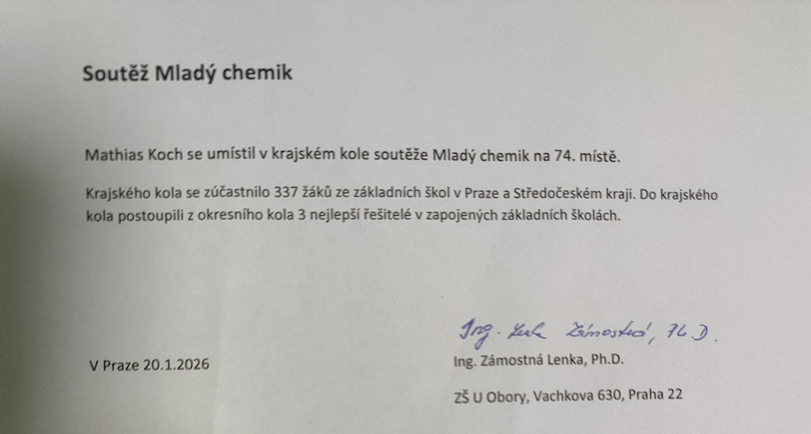
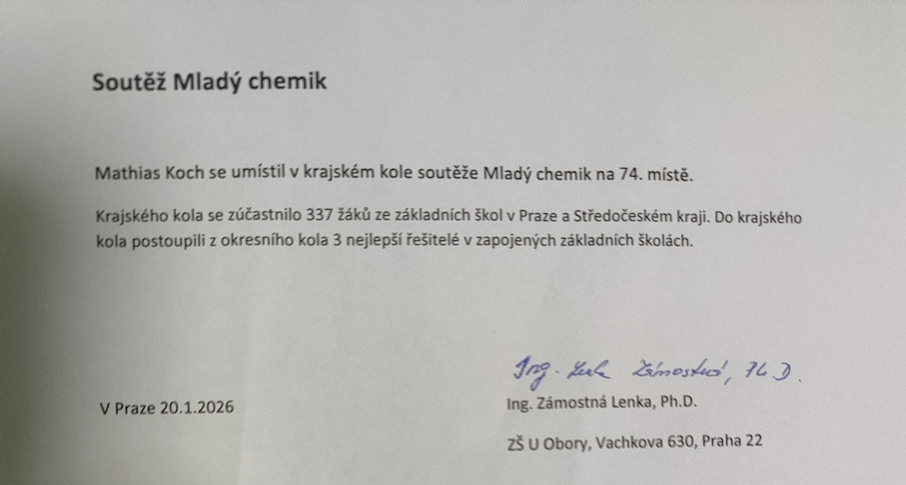

Jak moc se vyznáš v IT?
Mám úplné základy z Python, HTML a CSS.
Konkrétně se učím HTML a CSS ale určitě plánuju že se vrátím k Python (možná v době pohovoru jsem se už vrátil).
Také se chci naučit s Linux terminálem, ale to jsem ještě neudělal.
Jaké jsou tvé úspěchy ve škole?
Můj největší úspěch je postup do krajského kola chemické soutěže Mladý chemik, kde jsem se umístil na 74. místě z 330+ lidí.
 

Také jsem postoupil z 1. školního kola Anglické soutěže do druhého, a to ve 2 ročnících.
Byl jsem na naší škole aktivní a pomáhal jsem na mnoha akcích, jako byl Den otevřených dveří a Vánoční zpívání.
Ještě jsem se účastnil na ostatních soutěžích, například matematická soutěž Pangea a mnoho dalších.
Co jsi dělal za sport?
Nejprve jsem chodil na karate, pak jsem začal docházet na plavání, a nakonec jsem začal cvičit badminton, který mě bavil nejvíc. Bohužel jsem ho musel přestat dělat, protože trenér odešel a nebyl náhradní. Do teď ho občasně hraju ve škole s kamarády a nebo doma s rodinou.
Jaké předměty tě bavily na základní škole?
Baví mě a jde mi Matematika, Anglický jazyk, Informační technologie a Chemie.
Jaké jsou tvé ostatní zájmy?
Mám rád vaření a snažím se v něm zlepšit. Zatím vařím pouze podle receptů, ale rád bych vytvořil vlastní, které bych postupně zlepšoval. Pokaždé se učím ze svých chyb a používám je k zlepšení dalšího pokusu.
Přitahuje mě asijská kuchyně a polévky a samozřejmě klasická česká jídla
Ještě něco?
To je vše! Moc děkuji za pozornost a doufám že jsem vás alespoň trochu zaujal.